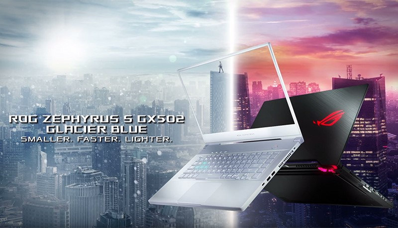

Armed with the power and versatility to slice through both AAA games and professional work, the ROG Zephyrus S GX502 redefines the bounds of Windows 10 ultra-slim gaming.
Its innovative cooling design unleashes the true potential of the latest 9th Gen Intel Core i7 CPU and NVIDIA® GeForce RTX™ 2070 GPU, allowing them to take full advantage of the ultra-responsive 240Hz/3ms PANTONE® Validated display.
Its adaptability shines with G-SYNC™ and Optimus modes, giving you the freedom to shift between exceptionally smooth gameplay and better battery life on the go.
|
NEW ROG ZEPHYRUS S GX502Product Code: IRSC2020 R 27 500 Availability: 5 In Stock Condition: New |

SLEEK, STRONG, AND ULTRA-SLIM
Reinforced metal chassis keep the Zephyrus S resilient against everyday use, with two professional finishes in Brushed Black and Glacier Blue.
The updated Glacier Blue tint brings new energy to the Zephyrus line, evoking a cooler, lighter feeling that underscores the family’s focus on elevating ultra-slim performance with Intelligent Cooling.
At 18.9mm thin and under 2kg, this powerhouse is 25% thinner and 42% lighter than typical 15’’ gaming laptops.
But it refuses to compromise between work and play, delivering dynamic performance and refined styling that’s trulythe best of both worlds.
SUPER NARROW
BEZEL MAGNESIUM-ALLOY CHASSIS 18.9MM THIN STRENGTH WITHOUT THE WEIGHT
Forged from a special magnesium-aluminum alloy, the chassis is machined down to exceptional thinness while maintaining the strength and durability needed for everyday use.
SHAPED FOR STIFFNESS Honeycomb reinforcements beneath the palm rest strengthen a highly trafficked area. The die-casted structure resists flexing while adding minimal material and weight.
FEWER FINGERPRINTS Soft-touch paint covers the palm rest, minimizing smudges and fingerprints with a thin coating that helps sustain the sleek styling and subtle sparkle through to the end of the day.*Soft-touch paint is only available on Brushed Black models.
SUBTLE YET STRIKING The streamlined design stuns in its details. Contrasting brush finishes slice across the lid, dovetailing precisely with the strategic cut that frees airflow out the back. Subtle diamond cuts chamfer the exterior edges and dig deeper near the touchpad to let you open the laptop effortlessly with one finger. The glow of the ROG logo across the lid creates a striking visual contrast against its surroundings.

LIGHTWEIGHT FORM. HEAVYWEIGHT PERFORMANCE.
Fusing the latest 9th Gen Intel® Core™ i7 CPU with revolutionary GeForce RTX™ 2070 graphics, the ROG Zephyrus S GX502 puts powerhouse performance in a compact package. ROG Boost clocks the GPU up to 1540MHz at 115W in Turbo mode to enable stunning realism, while the CPU offers speed and versatility for serious productivity and content creation. Up to 32GB of DDR4-2666 RAM and 1TB of RAID 0 SSD storage lets you cut through heavy multitasking and enjoy faster load times for every game and app that comes your way.
ROG's Intelligent Cooling philosophy mixes the right features and system settings to ensure the best experience for the chassis and components, no matter what you’re doing. In the Zephyrus S GX502, our innovative Active Aerodynamic System (AAS) opens additional vents to increase airflow by 22%, while the self-cleaning thermal module ejects dust to improve longevity. ROG Armoury Crate software seamlessly switches between operating modes to optimize performance and acoustics for the task.
| Operating system | |Processor | |Display | |POWER | |Wi-Fi / Bluetooth | |Dimensions | |Weight |
|---|---|---|---|---|---|---|
| Windows 10 Home | |Intel®Core™ i7-9750H | |15.6-inch Full HD (1920x1080) IPS-level panel, 144Hz, 3ms, 100% sRGB, Pantone® Validated, G-SYNC™ | |230W Power Adaptor Support Type-C PD 3.0 up to 65W | |Intel® 802.11ac (2x2) Gigabit Wi-Fi. Bluetooth 5.0*Bluetooth version may vary as the OS upgrades. | |360(W)x252(D)x18.9(H)mm | |2.0 kg |
{kind=link}
{kind=link}
{kind=link}
{kind=link}
{kind=link}